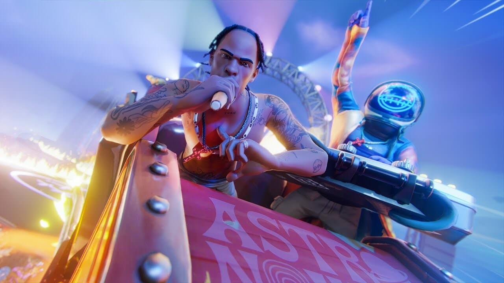

Evento do Travis Scott chega ao Fortnite.

Saiba sobre
Travis Scott fez uma apresentação virtual no game "Fortnite", nesta quinta-feira (23), vista por pelo menos 14 milhões de fãs.
O rapper ganhou uma skin no jogo em maio de 2020, quando foi anunciado o evento Astronomical. Uma mini turnê do rapper aconteceu entre os dias 23 e 25 de abril de 2020 dentro do jogo
Clique para saber mais.
Você ira gostar: RTX 4090 chega ao mercado ,
Loud é campeã do mundo de Valorant